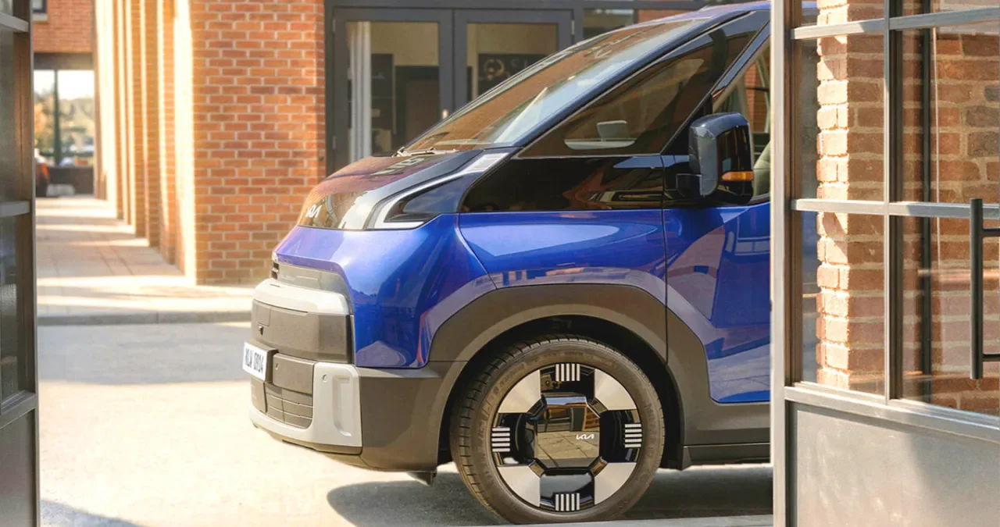
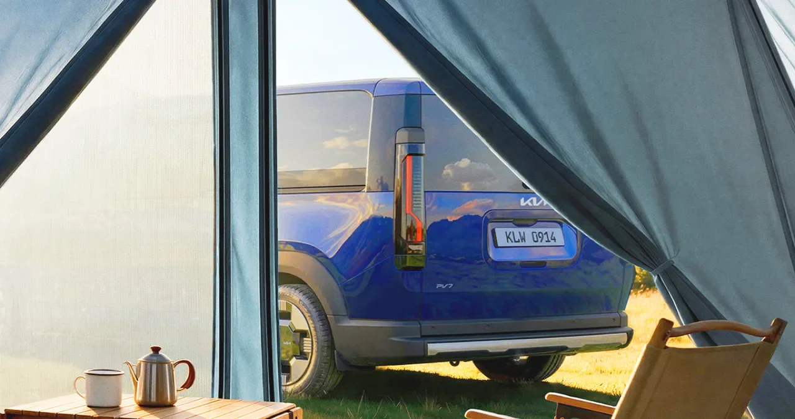

▲ 기아가 8월 31일 공개한 '더 기아 PV7' 티저 이미지. 원박스 실루엣에 검은색 후드·필러 가니시로 강한 대비를 줬다 ⓒ 기아
1. 무슨 일이 있었나
기아가 8월 31일 전동화 PBV '더 기아 PV7'의 티저 이미지와 영상을 처음 공개했다. PV5에 이어 두 번째로 선보이는 PBV(목적기반모빌리티) 모델로, 기아는 이를 통해 'PBV 라인업을 대형급으로 확장한다'고 밝혔다.
티저 이미지는 골목길에 세워진 차량, 캠핑장 텐트 너머로 보이는 차량, 도심 거리에 주차된 카고밴 사양 등 다양한 실사용 장면으로 구성됐다. 기아 측은 "고객의 목적과 사용 방식에 따라 유연하게 확장되는 PBV의 가능성을 제시한다"고 설명했다.

▲ 티저 이미지 중 하나. 주택가 골목이라는 일상적인 배경에 차량을 세워 놓았다 ⓒ 기아
2. '카니발보다 크다'는 말이 나온 이유
PV7은 PV5와 같은 전용 전기차 플랫폼 E-GMP.S(Electric-Global Modular Platform for Service)를 쓰지만, 차체는 한 단계 키웠다. 보도 다수가 이를 두고 '카니발보다 크다'는 표현을 썼는데, 기아가 공식 자료에서 구체적인 전장·전폭 수치를 아직 공개하지 않아 정확한 비교는 실물 공개 이후에나 가능하다.
디자인 측면에서는 원박스(one-box) 형태의 측면 실루엣이 특징이다. 검은색 후드와 필러 가니시가 차체 색상과 강한 대비를 이루고, 전·후면 램프에는 PV5부터 이어지는 PBV 라인업 공통의 시그니처 그래픽이 들어갔다.
📍 PBV가 뭔가
PBV(Platform Beyond Vehicle)는 단일 차체로 여러 용도에 대응하는 목적기반모빌리티다. 기아는 이를 승객 수송용 '피플무버', 업무 환경에 맞춘 '유틸리티', 물류 배송용 '딜리버리' 세 유형으로 나눠 개발하고 있다. 하나의 플랫폼에서 좌석 배치나 적재 공간 구성을 바꿔 택시, 배송차, 캠핑카 등으로 변형할 수 있다는 점이 승용 기반 밴과 다른 지점이다.
3. PV5 → PV7 → PV9, 완성되는 3단 라인업
PV7은 기아가 예고한 3단계 PBV 라인업의 두 번째 순서다. 2025년 7월 먼저 출시된 PV5가 소형~중형급을 맡고, 2027년 PV7이 그 위 체급을, 2029년으로 예정된 PV9이 최상위 대형급을 채우는 구조로 알려졌다. 다만 PV7의 정확한 체급 명칭은 매체마다 '대형'과 '중형'으로 갈려 있어, 최종 확정은 실물 공개 이후를 지켜봐야 한다.
| 모델 | 출시 시점 | 비고 |
|---|---|---|
| PV5 | 2025년 7월(출시 완료) | 2026 세계 올해의 밴 선정 |
| PV7 | 2027년 국내 출시 예정 | 2026년 9월 IAA서 실물 최초 공개 |
| PV9 | 2029년 예정 | 라인업 최상위 체급 |
PV5는 이미 시장에서 성과를 냈다. 올해 8월까지 글로벌 누적 3만 9천여 대가 팔렸고, 국내에서는 7월 한 달에만 2,472대가 등록돼 기아 전기차 판매 3위에 올랐다. PV7은 이 실적을 발판 삼아 법인·물류 고객까지 수요를 넓히는 역할을 맡는다.

▲ 캠핑장 텐트 사이로 보이는 PV7. 업무용뿐 아니라 레저용으로도 쓸 수 있다는 점을 강조한 구도다 ⓒ 기아
4. 2030년 23만 2천 대, 근거가 되는 숫자
기아는 2030년까지 글로벌 PBV 시장에서 연간 23만 2천 대를 판매한다는 목표를 제시했다. 같은 해 예상되는 전체 전기 상용차 시장 규모(약 100만 대)의 23.2%에 해당하는 공격적인 수치다.

▲ 티저와 함께 공개된 실내 이미지. 좌석을 마주 보게 배치한 라운지형 구성이 눈에 띈다 ⓒ 기아
이 목표를 뒷받침하는 것은 PV5의 초기 실적이다. 목적기반 차량이라는 낯선 개념에도 국내 월 2,472대라는 판매량이 나왔다는 것은, 기존 완성차 대신 '용도별로 바뀌는 차'를 사는 법인·개인 수요가 실제로 존재한다는 뜻으로 해석된다. PV7이 이 수요를 물류·법인 영역까지 넓혀줄 수 있을지가 관건이다.
5. 아직 확인되지 않은 것들
티저는 말 그대로 예고편이다. 실물 공개 전까지는 확정되지 않은 정보가 많다.
✅ 체크포인트
· 전장·전폭 등 구체적 제원은 공식 미공개 — '카니발보다 크다'는 표현은 매체의 정성적 묘사다
· PV7의 정확한 체급(중형/대형) 표기가 매체마다 엇갈린다 — 기아 공식 자료는 '대형급 확장'이라고만 표현
· 국내 판매 가격, 배터리 용량, 1회 충전 주행거리는 아직 공개되지 않았다
· 실물 최초 공개는 9월 14~20일 독일 하노버 IAA 트랜스포테이션 2026이며, 국내 출시는 2027년으로만 예정돼 있다
6. 정리
기아가 PV5에 이은 두 번째 PBV '더 기아 PV7'의 티저를 공개했다. E-GMP.S 플랫폼을 공유하되 체급을 키워 법인·물류 수요까지 흡수한다는 전략으로, 2027년 국내 출시를 거쳐 2029년 PV9까지 이어지는 3단계 라인업을 완성할 계획이다. 2030년 연 23만 2천 대라는 목표는 PV5가 이미 증명한 시장 수요를 딛고 세운 수치지만, 정확한 제원과 가격은 9월 14일 독일 하노버 실물 공개 이후에야 드러날 전망이다.